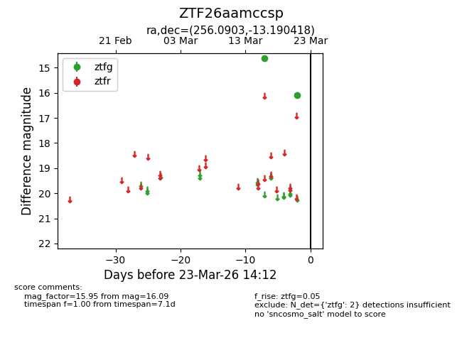
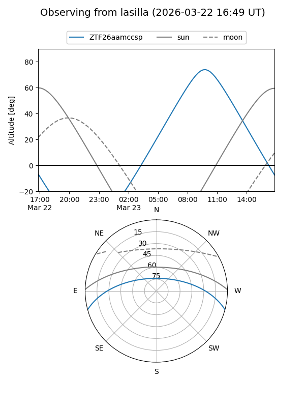
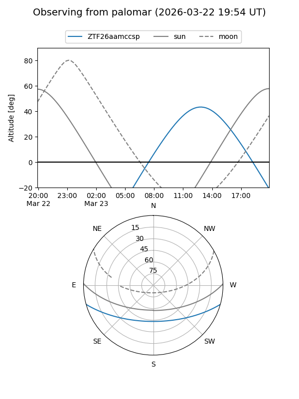

ZTF26aamccsp
Target ZTF26aamccsp at 2026-03-23 14:14
Aliases and brokers:
FINK: link
Lasair: link
ALeRCE: link
alt names
ZTF26aamccsp (ztf,fink_ztf)
Coordinates:
equatorial (ra, dec) = 256.0903,-13.19042
equatorial (HMS+DMS) = 17:04:21.67,-13:11:25.50
galactic (l, b) = (8.0570,+16.63197)
Flags:
Photometry:
last ztfg=16.09
2 ztfg detections
Lightcurve

Visibility


Additional plots